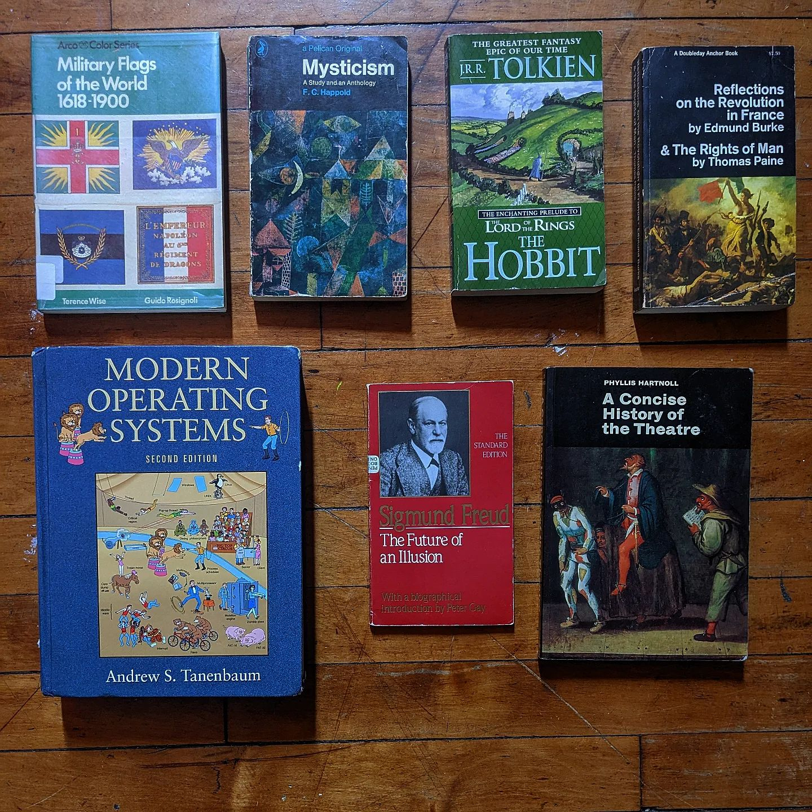

I sell used books out of my arts studio in downtown Providence, Rhode Island. There are fewer than 1000 and they are mostly in very fine condition and inexpensive. My curation pulls from philosophy, history, fiction, advanced maths, other languages, religion, etc.
Inventory is posted on instagram here: link. The images below are a small sampling for those who can't view instagram. If you want to come see the books, DM the instagram or email me at noajacques@protonmail.com
I also teach music lessons and tutor college courses, if you are interested in that click here: link
I am aware that in English "convivial" now seeks the company of tipsy jollyness, which is [...] opposite to the austere meaning of modern "eutrapelia," which I intend. By applying the term "convivial" to tools rather than to people, I hope to forestall confusion.
"Austerity," which says something about people, has also been degraded and has acquired a bitter taste, while for Aristotle or Aquinas it marked the foundation of friendship. In the Summa Theologica, II, II, in the 186th question, article 5, Thomas deals with disciplined and creative playfulness. In his third response he defines "austerity" as a virtue which does not exclude all enjoyments, but only those which are distracting from or destructive of personal relatedness. For Thomas "austerity" is a complementary part of a more embracing virtue, which he calls friendship or joyfulness. It is the fruit of an apprehension that things or tools could destroy rather than enhance eutrapelia (or graceful playfulness) in personal relations.
Last modified 16 August 2023
